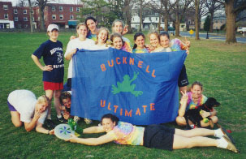Fun Peace Frog Photos!!!!
Haverford: Pigout Layout 99
Wedge is demonstrating her infamous pancake layout that she negelectedto practice during the game.
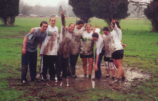
Maryland: Outer Loop 99
Frogs return to their amphibian roots, playing in the mud puddle.
| 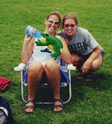 | 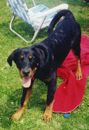 |
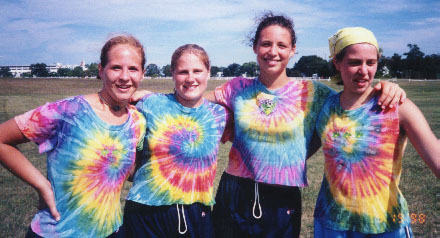
Kate, Kelly, Kathy and Julie (our upperclassmen) trying to keep ussophmores under control.
The Breaks of Rev strike again!!!!
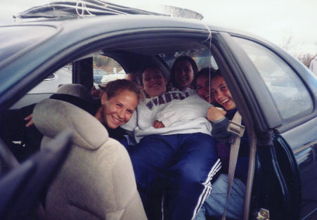
The Clown Car: Really the team could walk the 20 feet to the fields,but we'd rather drive. Don't we look comfortable??
| 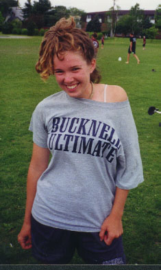 | Go Jenni!!!! The 80s are back! From this picture you'd neverguess she was the only one dating!!! |
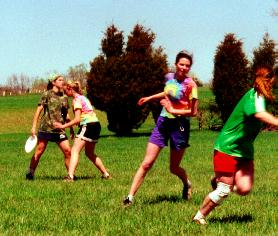
Some Mad D by Katy and Deb!!! You'd never know we were playingsavage (as always)
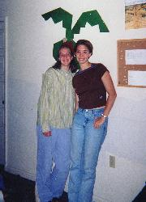
Julie and Michelle. We can't belive that they'll be gone nextyear...sad, sad, sad.
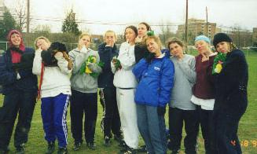
Penn State: Spring Phling 99 (what a great tourney!!) Frogs take amoment to reflect on the days events, maybe winning the party the nightbefore wasn't the best idea.
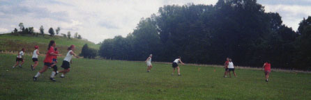
Tough Nut Cup baby!!!!
| 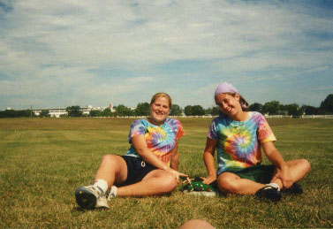 | Kelly and Becky display Darrel and the Frog, our team mascots!!! |
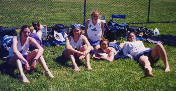
Katy, Jenni, Kate, Michelle and Kathy
The frogs take a minute to relax during regionals. We proceededto go undefeated that day!!!
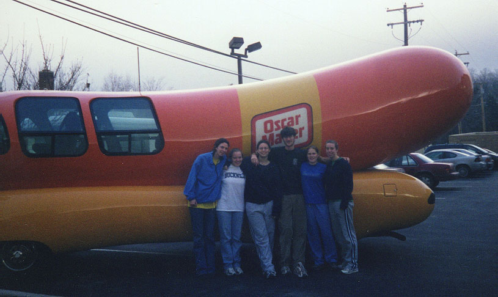
I wish I were an Oscar Mayer...
Stay Tuned for More Pictures!!!